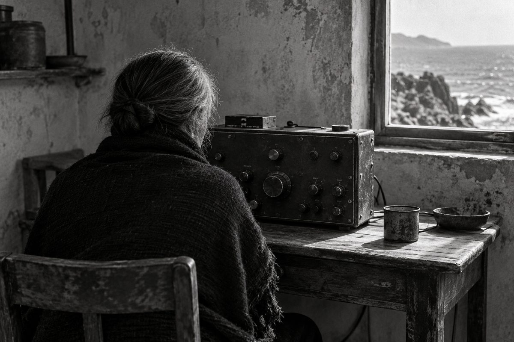

No. 001 ·
李怡志，71歲，退休遠洋漁船岸台無線電通訊員
〈三點以後的雜訊〉
- 性別
- 女
- 年齡
- 71
- 職業
- 退休遠洋漁船岸台無線電通訊員
- 居住地
- 澎湖白沙後寮
場景
後寮的巷子在下午三點是空的，只有曬在矮牆上的漁網滴水，一滴一滴落在水泥地同一個點上，那個點已經比別處深。李怡志的家在巷底右轉第二間，門沒有鎖，門框上端釘著一塊木板，木板上有三個釘孔，其中兩個空著。她說那是以前掛牌子的地方，牌子被風帶走，她沒有再做一塊。
屋裡只有一張長桌，桌面被磨得發亮，靠窗那半邊放著一台銀灰色的短波接收機，旋鈕有七個，其中一個的刻度盤已經脫落，露出裡面的黃銅。接收機接著一條線，線從窗戶的縫隙出去，爬過屋頂，接到後面那根竹竿上。屋裡沒有電視。牆上掛著一本日曆，停在三年前的某個月份，她說撕到那裡就忘了，忘了以後發現也沒有差。
她替我倒水，用的是一個沒有把手的玻璃杯，杯緣有一個小缺口，她把缺口轉到自己那一邊。接收機開著，聲音壓得很低，是那種持續的、有顆粒的沙沙聲，中間偶爾會鼓起一個音，像有人在很遠的地方推了一下門。整個下午那個聲音都在，我們的對話是疊在那上面進行的。她從來沒有把它關掉，也沒有解釋為什麼不關。

人物介紹
李怡志今年七十一歲，做了三十四年的岸台通訊員，退休十二年。她的工作是在陸地上守著一個頻率，等遠洋漁船在固定的時間呼叫回來，記下船位、漁獲、傷病、有時候是家裡要轉給船上的話。她說那份工作最重要的技能不是聽得懂，是聽得出來。同一個船長，講話的節奏比上個月快了半拍，那就有事。
她進這一行是因為考不上別的。十九歲那年她在高雄的補習班待了三個月，後來看到報紙一角的招考啟事，去了，考上了，從此再也沒有離開過那張桌子。她自己說這叫「掉進去」。同事都叫她「阿志姊」，連比她年長的也這樣叫，她說那是因為她講話慢，聽起來就比較老。
她結過一次婚，先生是輪機長，在她三十八歲那年於印度洋上過世，心臟，船離最近的港口還有四天。她收到消息的時候正在值班，她把那通呼叫記錄完，簽了名，才站起來。這件事她在訪談中只提了一次，用的是「那天的班」這個說法。
退休之後她從高雄搬回澎湖。每天凌晨三點起床，這是三十四年輪班留下來的東西，改不掉了。起床以後她開機，不特別找什麼台，就讓雜訊在屋子裡鋪開，坐到天亮。鄰居說她是在等，她說不是。
訪談
我問她那台機器現在還收得到什麼，她想了一下，把手放到旋鈕上但沒有轉。
「什麼都收得到，又什麼都不是給我的。以前不一樣，以前那個頻率上面出現的每一個聲音都是要來找我的。現在它們只是……經過。」
她說這句話的時候眼睛看著窗外那根竹竿。我問她會不會覺得可惜，她搖頭，說可惜是別人講的詞。
「我沒有在懷念工作，我懷念的是那種被指名的感覺。你懂嗎，整片海那麼大，他就是喊我這個台。他喊錯了會怎樣？他喊錯了就沒有人回他。」
中間有一段她講到一半停住，去廚房把火關了，回來以後接得不太上，重新起了一次頭。
「訊號不會不見。這個事情很多人搞錯。它只是跑到別的地方去待著，或者變得很小聲，小聲到你要很安靜才聽得到。所以我三點起床。三點的時候整個島最安靜，連狗都睡了。」
臨走之前她補了一句，是整個下午唯一一次她主動開口。
「我不怕沒有人叫我。我怕的是有人叫了，我在睡覺。」
對話
——這台機器多久沒有調到一個明確的台了？
——很久。上次是去年，不對，前年。有一個菲律賓的漁業廣播，女生的聲音，唸的東西我聽不懂，但是她唸得很好聽。唸完會放一段音樂，像進廣告那樣。
——你有錄下來嗎？
——沒有。錄下來就變成別的東西了。
——變成什麼？
——變成我的。它就不是在那裡自己存在的了。
她起身去把窗戶推開一點，風進來，接收機的雜訊沒有改變，但是屋子裡的其他聲音多了起來。
——你平常一個人在這裡，會跟誰講話？
——早上有一個收垃圾的會經過，他會按喇叭，我就出去。一個禮拜有兩天。
——那其他五天？
——其他五天就是現在這樣啊。
——現在這樣是哪樣？
——就是有聲音，但是不用回答。
——你先生在船上的時候，你們會在頻率上講到話嗎？
——公頻不能講私事。他每次報完，會多按兩下發射鍵，喀、喀，那個是給我的。別人聽起來是雜音。
——你會回他嗎？
——不能回。我是台，我要保持頻道乾淨。
她把玻璃杯往自己那邊挪了半公分，缺口那一邊，然後沒有喝。
——後來那天的班，結束以後你有沒有再聽那個頻率？
——有。聽了很多年。
——聽到什麼？
——聽到很多船。都不是他。這個很正常，你不要露出那種表情。海上本來就是這樣，一個聲音沒有了，別的聲音會把那個位置補起來，很快，快到你會覺得不公平。可是規矩就是規矩。
——那你現在還在聽什麼？
——我在聽有沒有哪一個聲音，是特別要來找我的。到今天為止沒有。可是你看，今天你就來了，你不是聲音，你是人，這個更難。
——你是說你等到我了嗎？
——我是說今天的雜訊裡面多了一個你。等一下你走了，它就會少一個。就這樣而已，你不要寫得太好聽。
■